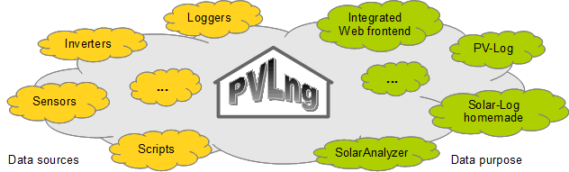

A logging and data warehouse system for measuring data of sensors and photovoltaic plants.
The system acts as a data warehouse.
All data will be stored in an very simple and efficient internal structure (readings), optimized for data readout of any kind with a well defined interface.
This system addresses all the user interested in data analysis, which will have a deeper look into their logged data.
The system will accept data from any external sources and can deliver them for any purpose. A web front end for graphing is also integrated.

To use this system best, a deeper knowledge in server administration, shell scripting and probably PHP is recommended but not required.
The system is build using a channel logic which will described later in detail.
Each channel will handled by a specific model.
Depending of the installed base of our plant, the following components are still implemented:
1. Data storage
o Inverter data (feed-in power, DC power voltage, Current etc.) from a SMA Webbox
o Irradiation and module temperature from a SMA Sensorbox
o Outside and inverter temperatures via USB -> 1‑Wire -> Temperature sensor
o Power consumption from watt meter via S0 impulses
2. Data readout
o Model for the PV-Log URL interface in JSON
o Script to push data to PVOutput
o Script to update a Twitter account
o [planned] Extractor witch creates Solar-Log compatible JS files, for example for Solar-Log homemade or SolarAnalyzer
Created with the Personal Edition of HelpNDoc: Free Kindle producer